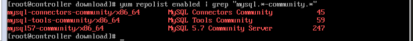
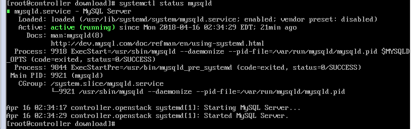
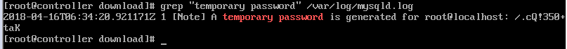

配置yum源
1 | # 下载mysql安装源包 |
检查mysql源是否安装成功:
1 | root @~> yum repolist enabled | grep "mysql.*-community.*" |
如下图则安装成功:

安装mysql
1 | root@ ~> yum install -y mysql-community-server |
启动MySQL服务并设置开机自动启动
1 | root@ ~> systemctl start mysqld |
查看MySQL启动状态

1 | root@ ~> systemctl enable mysqld |
修改默认密码
刚安装完的mysql会自动给root用户分配一个临时密码，而且必须重新设置密码(从5.5版本开始)
- 先查看root用户的临时密码
1 | root@ ~> grep "temporary password" /var/log/mysqld.log |
- 使用临时的密码登录进mysql来设置新的密码
1 | mysql> set PASSWORD = PASSWORD('[YOUR_NEW_PASSWORD]') |

- 可能遇到的问题：设置的密码过于简单mysql报错:
1 | Your password does not satisfy the current policy requirements. |
解决方法：由于刚安装的mysql的密码默认强度是最高的，若想要设置简单的密码就要修改validate_password_policy的值，
validate_password_policy有以下取值：
| Policy | Tests Performed |
|---|---|
| 0 or LOW | Length |
| 1 or MEDIUM | Length;numeric,lowercase/uppercase,and special characters |
| 2 or STRONG | Length;numeric,lowercase/uppercase,and special characters; dictionary file |
操作：
- 设置安全级别
1 | mysql> set global validate_password_policy=0; |
- 设置密码长度为8，可以设置为其他值，最小为4位
1 | mysql> set global validate_password_length=4; |
之后就可以设置简单的密码了。
允许root远程登录
1 | mysql> GRANT ALL PRIVILEGES ON *.* TO 'root'@'%' IDENTIFIED BY '[YOUR_PASSWORD]' WITH GRANT OPTION; |
修改字符集编码为UTF-8
- 查看当前字符编码
1 | mysql> show variables like "char%'; |
检测是否都是utf-8(filesystem除外)，如果不是就需要修改。 character_set_server一般是lantin1。
1 | # 停止mysqld服务 |